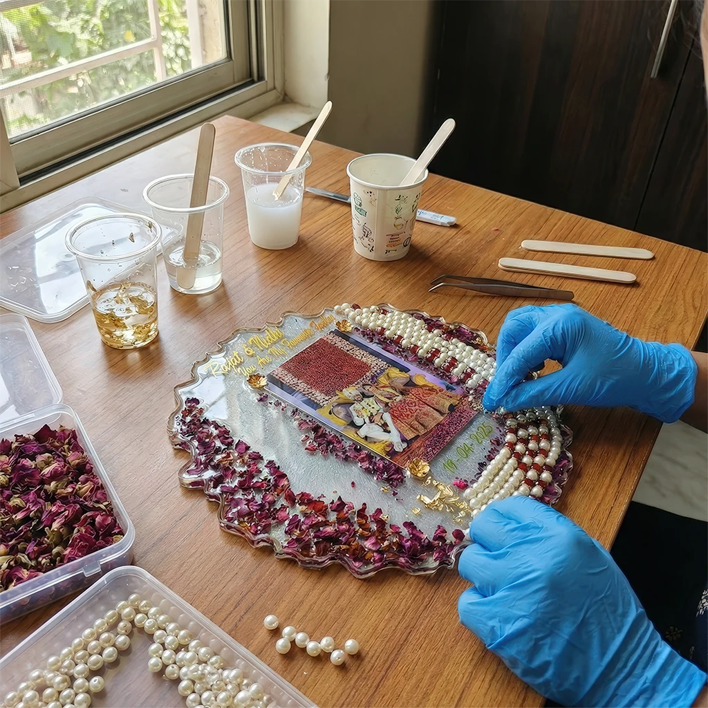

Behind the Resin
Capturing Time,
Follow My Journey
Capturing Time,
One Drop at a Time.
Welcome to my creative sanctuary. What started as a fascination with preserving the fleeting beauty of a single rose has blossomed into Creative Gallery Store.
I believe that memories shouldn't fade. Whether it's the flowers from your wedding day or a simple keepsake, I encase them in resin to create artifacts that defy time. Every bubble popped and every pigment mixed is done by hand, with an intention to make something truly precious for you.
With love,
The Artist